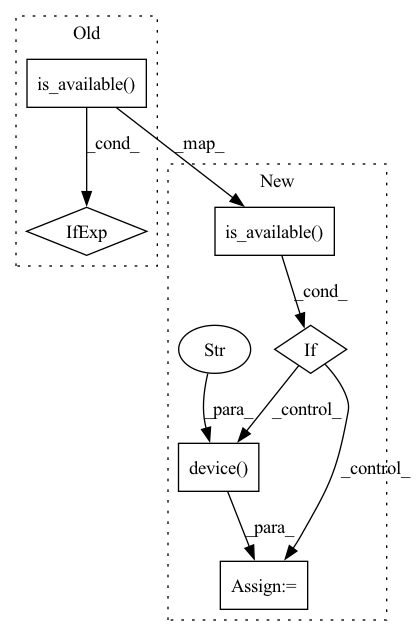

Pattern ID :31624
Before Change
):
initialize object
if device == "auto":
self.device = torch.device("cuda" if torch.cuda.is_available() else "cpu")
else:
self.device = device
str, either "auto, "cpu" or "cuda".After Change
):
initialize object
if device == "auto":
if torch.cuda.is_available() :
self.device = torch.device("cuda")
elif torch.backends.mps.is_available() and torch.backends.mps.is_built():
self.device = torch.device("mps" )
else:
self.device = torch.device("cpu")
else:
self.device = deviceIn pattern: SUPERPATTERN
Frequency: 3
Non-data size: 6
Instances Fragment ID: 92269583
Project Name: novartis/scar
Commit Name: 76c3e6e9dd8ced098948b1c74dc7e1aaaa0b7fec
Time: 2023-02-04
Author: 43896555+CaibinSh@users.noreply.github.com
File Name: scar/main/_scar.py
M Class Name: model
N Class Name: model
M Method Name: __init__(11)
N Method Name: __init__(11)
M Parent Class:
N Parent Class:
M File Name: scar/main/_scar.py
N File Name: scar/main/_scar.py
M Start Line: 202
M End Line: 202
N Start Line: 202
N End Line: 208
Before Change
):
initialize object
if device == "auto":
self.device = torch.device("cuda" if torch.cuda.is_available() else "cpu")
else:
self.device = device
str, either "auto, "cpu" or "cuda".After Change
):
initialize object
if device == "auto":
if torch.cuda.is_available() :
self.device = torch.device("cuda")
elif torch.backends.mps.is_available() and torch.backends.mps.is_built():
self.device = torch.device("mps" )
else:
self.device = torch.device("cpu")
else:
self.device = device Fragment ID: 92269588
Project Name: novartis/scar
Commit Name: 38031ab4eb67b5fd939eb39a7cca526f2d276342
Time: 2023-01-07
Author: 43896555+CaibinSh@users.noreply.github.com
File Name: scar/main/_scar.py
M Class Name: model
N Class Name: model
M Method Name: __init__(11)
N Method Name: __init__(11)
M Parent Class:
N Parent Class:
M File Name: scar/main/_scar.py
N File Name: scar/main/_scar.py
M Start Line: 202
M End Line: 202
N Start Line: 202
N End Line: 208
Before Change
device = self.device
// Create the appropriate device object
device = torch.device(f"cuda:{device}"
if torch.cuda.is_available() else "cpu")
// Change device field
self.device = device
After Change
if device is None:
// If the function is called without a device, use the current device
device = self.device
elif torch.cuda.is_available() :
device = torch.device("cpu")
else:
// Create the appropriate device object
device = torch.device(f"cuda:{device}" )
// Change device field
self.device = device
Fragment ID: 92269586
Project Name: mjhydri/beatnet
Commit Name: 0389ef97614fda13f4e68ef91c3e33f826828156
Time: 2022-01-07
Author: karen.palacio.1994@gmail.com
File Name: src/BeatNet/model.py
M Class Name: BDA
N Class Name: BDA
M Method Name: change_device(2)
N Method Name: change_device(2)
M Parent Class: nn.Module
N Parent Class: nn.Module
M File Name: src/BeatNet/model.py
N File Name: src/BeatNet/model.py
M Start Line: 51
M End Line: 52
N Start Line: 49
N End Line: 53